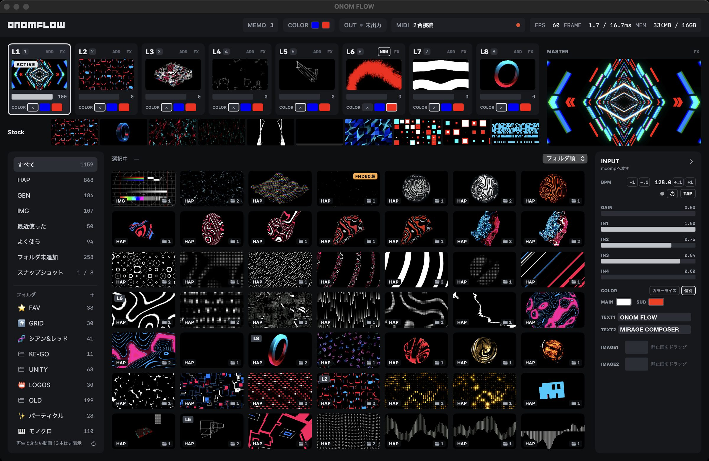
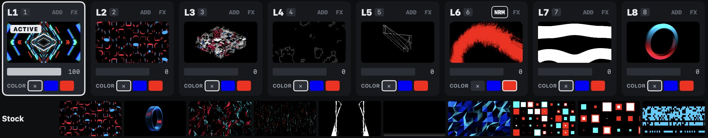
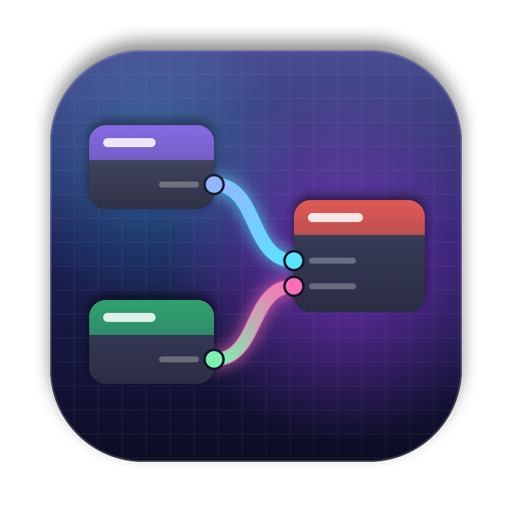
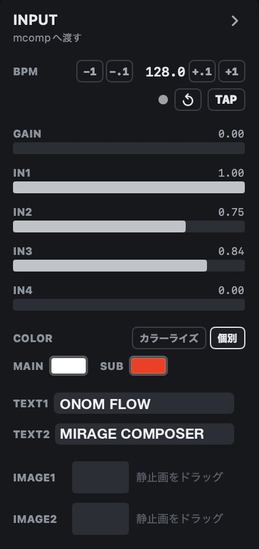

ONOM FLOW
シンプルで、実用的。
現場で培ったノウハウを詰め込んだ、Mac専用のVJアプリ。
Simple and practical.
A VJ app for Mac, packed with know-how from real gigs.
無料版でも、期限なしで4レイヤー。5,000円の買い切りで8レイヤー。
Four layers free, with no time limit. A one-time ¥5,000 purchase unlocks 8.
ONOM FLOW は現在開発中です。このページの説明や画面イメージは仮のもので、公開までに変わることがあります。
ONOM FLOW is still in development. The descriptions and screenshots on this page are provisional and may change before release.

- 無料・期限なしで4レイヤー足りなくなったら、5,000円の買い切りで8レイヤーに。
- 柔軟に展開を組み立てるレイヤーキューとストックエリアで、この先の流れを前もって仕込める。
- Mirage Composer で表現の幅を広げるジェネラティブな表現を、手軽に VJ セットへ取り込める。
- Four layers free, foreverUnlock eight with a one-time ¥5,000 purchase when you need them.
- Build your set as you goLine up what comes next with the Layer Queue and the stock area.
- Go further with Mirage ComposerBring generative visuals into your VJ set with ease.
VJ しながら思う
「あったら便利」を、形に
The things you wish you had
in the middle of a set
出ているレイヤーに素材を選んでも、いきなりは切り替わりません。素材はそのレイヤーのレイヤーキューに入り、alpha（不透明度）を0まで下げた瞬間に入れ替わります。この後に使いたい素材は、全レイヤー共通のストックエリアに10個まで。クリックひとつで、選んでいるレイヤーへ送れます。
Pick a clip for a layer that's showing and it won't cut in. It goes into that layer's Layer Queue and swaps in the moment you fade alpha (opacity) to zero. Clips you'll want later go into the stock area shared by all layers — up to ten — and one click sends any of them to the selected layer.
- 切り替えるタイミングは、フェーダーを下げる手で決まる
- レイヤーキューの素材はサムネイルに「次」と出て、右クリックで取り消せる
- ストックエリアはセットと一緒に保存される
- Your hand on the fader decides when the swap happens
- A queued clip shows “次” (next) on the thumbnail; right-click to cancel it
- The stock area is saved with your set

かけるだけで、
絵が決まる
Switch it on.
It just looks right.
グリッチ、万華鏡、ストロボ、輪郭の光。VJ のために作ったエフェクトが16本、はじめから入っています。レイヤーにかけて、MIDI のノブで強さを決めるだけ。
Glitch, kaleidoscope, strobe, edge glow — sixteen effects made for VJing come built in. Put one on a layer and dial in the amount from a MIDI knob.
- レイヤーごとにオン・オフ、出力全体にもかけられる
- 間隔ごとに崩れ方が変わるもの、ランダムに動くものも
- 足りなければ ISF のファイルを足して増やせる
- Switch effects per layer, or on the whole output
- Some change on a beat-like interval, some drift randomly
- Need more? Add your own ISF files
8列のコントローラーで、
8つのレイヤーを
Eight channel strips,
eight layers
Novation Launch Control XL シリーズや Akai APC シリーズのような、ノブ・フェーダー・ボタンが8列並ぶコントローラーと相性抜群。1列を1レイヤーに、MIDI Learn で割り当てるだけです。
A natural fit for controllers with eight strips of knobs, faders and buttons, like the Novation Launch Control XL and Akai APC series. One strip per layer, mapped with MIDI Learn.
- エフェクトのオン・オフもパラメータも割り当てられる
- Map effect toggles and parameters too
DJ ミキサーのエフェクトのつまみのように、ノブを回すと、そのレイヤーにかかるエフェクトがオフから順に1つずつ切り替わります。1つのノブにエフェクトを7つまで並べられ、レイヤーごとにノブを2つ使えます。
Like the FX selector on a DJ mixer, turning a knob steps a layer from Off through your chosen effects, one at a time. Line up to seven effects on a knob, with two knobs per layer.
BPMも色も文字も、
ジェネ素材へ
BPM, colors and text,
straight into generative clips
Mirage Composer で作った作品を、そのままジェネ素材として描きます。タップしたBPMや拍、色、文字が作品へ届きます。
Compositions from Mirage Composer play as generative clips, and receive your tapped BPM, beat, colors and text.


はじめかたは3ステップ
Three steps to start
- 素材を入れる書類フォルダの「ONOMFLOW」に入れるか、ウィンドウへドラッグ。はじめはサンプルのジェネ素材も入っています。
- レイヤーを選んで、素材をクリック選んだ素材が、そのレイヤーに入ります。
- フェーダーで出すalpha を上げると映像が出ます。0 まで下げた瞬間、レイヤーキューの素材に入れ替わります。
- Add your clipsPut them in the “ONOMFLOW” folder in Documents, or drag them onto the window. Sample generative clips are there to start with.
- Select a layer, click a clipThe clip goes straight to that layer.
- Bring it in with a faderRaise alpha to show it. Pull it down to zero and the clip in the Layer Queue swaps in.
コントローラーが無くても、マウスだけで始められます。素材が無ければ、無料の Mirage Composer のデモを素材フォルダに保存すれば、ジェネ素材として使えます。
No controller? A mouse is enough to start. No footage yet? Save a demo from the free Mirage Composer into your media folder and play it as a generative clip.
ほかにも
And also
- HAP・動画・静止画HAPはフルHD・60fpsまで。ロゴの静止画は大きさと位置を調整。
- カラーライズ2色を選ぶだけで、全レイヤーの色味がそろう。
- MEMOタイムテーブルやフライヤーを横に置いて、赤ペンで書き込み。
- HAP, video and stillsHAP up to 1080p60. Scale and place logo images.
- ColorizePick two colors and every layer follows.
- MEMOKeep the timetable or flyer beside you and mark it up in red.
素材は HAP がおすすめ
HAP is the way to go
H.264 や ProRes もそのまま再生できますが、HAP にすると切り替えが速く、8レイヤーでも負荷が安定します。無料のツールでまとめて変換できます。
H.264 and ProRes play as they are, but HAP switches faster and stays light across eight layers. Free tools convert whole folders at once.
- Shutter Encoder無料。ファイルを落として「HAP」を選び、まとめて書き出し。
- SynapseRack Media Encoder無料。HAP へのまとめ変換に絞ったエンコーダー。
- ffmpeg
ffmpeg -i in.mp4 -c:v hap out.mov
- Shutter EncoderFree. Drop files in, pick “HAP” and batch export.
- SynapseRack Media EncoderFree. A batch encoder built for converting to HAP.
- ffmpeg
ffmpeg -i in.mp4 -c:v hap out.mov
ふだんは HAP、透過が要るときは HAP Alpha、画質を上げたいときは HAP Q。1920×1080・60fpsまで、音は要りません。
Use HAP for most clips, HAP Alpha for transparency and HAP Q for higher quality. Up to 1920×1080 at 60 fps; no audio needed.
よくある質問
Questions
どのくらいの負荷で動きますか？
MacBook Air（M4・16GB）で計測した条件では、フルHDのHAP素材8レイヤーを60fps、遅れたフレームなしで再生できました（GPU平均2.7ms）。8レイヤーそれぞれにエフェクトを2つずつかけても平均10ms ほどで、1フレームの予算（16.7ms）に収まります。素材やエフェクトの組み合わせによって変わります。
Windows や Intel の Mac で使えますか？
使えません。Apple シリコン搭載の Mac 専用です。
出力は何画面に出せますか？
1つです。つないだディスプレイかプロジェクター1台に全面で出すか、このMacの画面にウィンドウで出します。
Syphon や NDI は使えますか？
今は使えません。
音に反応しますか？
音を解析する機能は今はありません。BPM をタップで合わせると、拍に合わせて Mirage Composer のジェネ素材を動かせます。
どんな合成ができますか？
レイヤーごとに、加算・通常・乗算から選べます。
どんな ISF でも動きますか？
ISF 2.0 に対応しています。ただし音声を入力にする ISF（audio・audioFFT）には値が渡りません。パスの多い重い ISF は、8レイヤーにかけると処理が追いつかないことがあります。
画面は英語にできますか？
できます。Mac の言語に合わせて、日本語か英語で表示します。
How much can it handle?
In our tests on a MacBook Air (M4, 16 GB), eight layers of 1080p HAP played at 60 fps with no late frames (GPU 2.7 ms on average). With two effects on each of the eight layers it averaged about 10 ms, within the 16.7 ms frame budget. Results vary with your clips and effects.
Does it run on Windows or Intel Macs?
No. It's for Macs with Apple silicon only.
How many outputs?
One: full screen on a single display or projector, or a window on your Mac.
Syphon or NDI?
Not at the moment.
Does it react to audio?
There's no audio analysis yet. Tap in the BPM and Mirage Composer clips can move with the beat.
Which blend modes?
Add, Normal and Multiply, chosen per layer.
Will any ISF work?
ISF 2.0 is supported. ISFs that take audio input (audio, audioFFT) receive no values, and heavy multi-pass ISFs may not keep up across eight layers.
Is the interface available in English?
Yes. It follows your Mac's language: Japanese on a Mac set to Japanese, English otherwise.
用語
Terms
- alpha
- 不透明度。0で見えなくなり、上げるほど濃く出ます。
- HAP
- VJ向けの動画の形式。どのコマからでもすぐ読めるので、切り替えが速く負荷も軽い。
- ISF
- 映像エフェクトを書くための共通の形式。VDMX などでも使われています。
- ジェネ素材
- ファイルを再生するのではなく、その場で描く映像。Mirage Composer の作品や ISF のジェネレーター。
- MIDI Learn
- 割り当てたい操作を選んで、コントローラーのノブやボタンを動かすだけで割り当てる方法。
- alpha
- Opacity. At zero the layer is invisible; raise it to bring the layer in.
- HAP
- A video format made for VJing. Every frame can be read on its own, so switching is fast and light.
- ISF
- A shared format for writing visual effects, also used by VDMX and others.
- Generative clip
- Visuals drawn live rather than played from a file — Mirage Composer compositions and ISF generators.
- MIDI Learn
- Select an action, then move a knob or press a button on your controller to map it.
無料で4レイヤー。
5,000円の買い切りで8レイヤー。
Four layers free.
Eight for ¥5,000, once.
無料版も期限なしで、すべての機能が使えます。4レイヤーあれば、はじめてのVJには十分。足りなくなったら、5,000円の買い切りで8レイヤーに。サブスクはありません。
The free version has every feature and never expires. Four layers are plenty when you're starting out. When you need more, unlock eight with a single ¥5,000 purchase — no subscription.
価格は予定です（税込）。日本以外の国では、App Store のその国の価格になります。
Planned price in Japan (tax included). Other countries use the App Store's local price.
動作環境
Requirements
- OS
- macOS 15 Sequoia 以降
- Mac
- Apple シリコン搭載の Mac
- 素材
- HAP（推奨）、H.264・HEVC・ProRes、JPEG・PNG、ISF、Mirage Composer の .mcomp
- MIDI
- macOS で認識できるコントローラー
- 言語
- 日本語・英語（Mac の言語に合わせます）
- OS
- macOS 15 Sequoia or later
- Mac
- A Mac with Apple silicon
- Media
- HAP (recommended), H.264, HEVC, ProRes, JPEG, PNG, ISF and Mirage Composer .mcomp
- MIDI
- Any controller macOS recognizes
- Language
- English and Japanese (follows your Mac’s language)